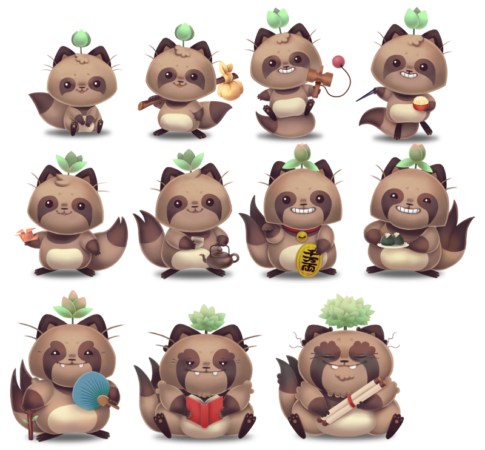
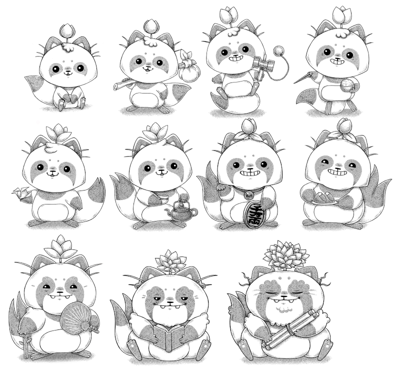

About
About Projects
Projects Games
Games Stories
Stories Store
Store Hobby
Hobby Notes
Notes How-to
How-to
An Android app for looking up kanji with self-organized sets for convenient studying and quizzing.
- Publisher Chase Colburn
- Illustrator Me
See the app here. I collaborated with Chase to make tanuki to represent each level. Interestingly enough, I met Chase when I lived in japan, he was working with devine for the language-learning app iKnow!. Since then Chase has left the company, and is now spending all of his time making Kanji Study!
In-game previews


Concept sketches
Below are the sketches. Everytime a player successfully passes a lesson, the tanuki grows up, until it becomes old and wise. As it ages, the flower on its head blooms into a tree.

Finished artwork
The color versions as they appear in the app.
Because the app has a dark mode, we decided to make 'dark mode' tanuki too! The shading is a sort of digital pointillism, in the style of my vancouver island mushrooms series.
